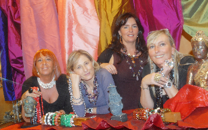

-
Silvia Silvia è la designer del marchio Le Muse, ha un passato di pittrice e ceramista per poi arrivare a disegnare le sue collezioni di gioielli realizzati con corallo, perle, pietre preziose, oro e argento. II marchio Le Muse è l'albero della vita simbolo di rinnovamento della vita, realizzato in corallo Che in Italia è da sempre simbolo di rinascita e buona fortuna. Le varie collezioni traggono ispirazione dalla tradizione italiana e ogni pezzo è prodotto in Italia. Queste collezioni sono in esposizione nel negozio Le Muse situato in Varese. L'atelier è specializzato nella creazione di pezzi unici di gioielleria per i propri clienti dal 1984.
-

Silvia Silvia is the designer of the brand Le Muse gioelli. She has a past as a painter and ceramist before reaching the design of its jewelry collections made out of coral, pearls, precious stones, gold and silver, The trademark is the tree of life: a symbol of rebirth and life energy thus made of coral, as in Italy the coral is a symbol of reneval of life and good luck. Her various collections arise from Italian traditions and everything is proudly made in Italy. These collections are exposed in the little shop "Le Muse" located in Varese. The atelier is specialized in the creation of unique pieces of jewelry for its customers since 1984.
-

La squadra La squadra dell'atelier 'Le Muse' unisce la massima attenzione alle esigenze della clientela con la capacità di consigliare anche nelle scelte più difficili. Competenza, cortesia, sensibilità artistica e buon gusto completano il profilo di questo gruppo insuperabile
The team The team of the atelier 'The Muse' combines maximum attention to the needs of customers with the ability to advise in the most difficult choices . Competence, courtesy , artistic sensitivity and good taste complete the profile of this unsurpassed group.